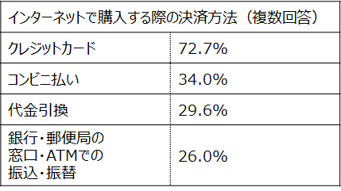
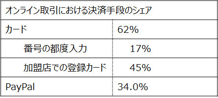

スマートフォンの普及と歩調を合わせ、拡大を続けるオンラインショッピング。そんな電子商取引（EC）での利便性向上と「カゴ落ち」の防止を目指し、決済分野で様々なプレイヤーが決動いています。大手EC加盟店は、自社アカウントに登録されている決済情報を使ったウォレットサービス。決済事業者は独自のウォレットサービス。VisaやMastercardといった国際ブランドは、EMVCo標準のSRCで対抗していく動き。IT業界はブラウザ決済に向けた標準化。今回はこうした動きを俯瞰しながら、ネット決済の潮流を紹介します。
日本のEC市場と決済手段
EC市場の拡大についてはよく語られますが、まずはその実態を押さえておきましょう。図表１に表形式で示しているのは、日本国内の個人向けEC市場規模です。経済産業省の「平成３０年度電子商取引に関する市場調査」のデータです。２０１８年の市場規模は早計17兆9,850億円で、これは前年から8.96%伸びています。
図表１：２０１８年の日本国内の個人向けEC市場規模と物販系分野のスマートフォン経由の購買比率（経済産業省「平成30年度電子商取引に関する市場調査」を元に作成）
フキダシで示している円グラフは、物販系分野での購入チャネル。39.3%がスマートフォン経由です。前年は35.0%でしたので、EC市場規模の拡大と同時に、スマートフォン経由の購買も拡大していることがわかります。
それでは、消費者がネットで買い物するとき、どんな決済手段を使っているのでしょうか。この疑問に対しては、総務省の「平成３０年通信利用動向調査」のデータが役立ちます。

図表２：日本における主要なEC決済手段 （総務省、「平成30年通信利用動向調査」を元に作成）
利用してる決済方法を複数回答で尋ねた結果です。クレジットカードがダントツ１位で72.7%。２位のコンビニ払いの34.0%を大きく引き離しています。
カード番号入力が購入を阻む
ここで気になるのが、「買う気になって商品をショッピングカートに入れたのに、途中で購入を止めてしまう」という、いわゆる「カゴ落ち」です。ECではいかにこのカゴ落ちを抑制して、購入完了まで持っていけるかが勝負どころ。読者も経験がおありと思いますが、ちょっとした面倒さ、わかりづらさがカゴ落ちの原因となってしまいます。
スマートフォン経由でのECが拡大する中で問題となるのが、クレジットカードの番号の入力。EC事業者にカード番号を登録済ならば入力は不要なことが多いですが、初めて利用するサイトでは必須。しかし、スマートフォンでの番号入力は煩雑で、筆者も入力に失敗してやる気をくじかれることも多々あります。
ネット決済をスムーズに
こうした状況を考慮して、EC事業者はユーザーアカウントにカード番号を登録してもらうことを重視しています。一度登録してもらえればもう決済はカンタン、ボタン一つで完了です。こうなってしまえば、決済はフリクション（購入障壁）にならず、逆に他社に対する優位点となります。これはEC事業者による「ネット決済スムーズ化」で、もう長年やられていることです。
決済事業者による対応策には「ウォレットサービス」があります。これは、カード番号などを「ウォレット（財布）」に入れてもらい、決済の際にはウォレットサービスによる認証を経て登録カードでの支払いを行う、というもの。カード番号の入力はウォレットへの登録時だけで済むという利点があります。カード番号を使わず、ウォレットサービスのユーザーIDで決済できる特徴から「ID決済」と呼ばれることもあります。
日本では「Apple Pay」、「楽天ペイ」、「LINE Pay」、「Amazon Pay」などがウォレットサービスを提供しています。個々のEC事業者の枠を超えて、多様な加盟店で利用可能な汎用的なEC決済ですが、まだ市場に大きなインパクトを持つプレイヤーは出現していないようです。
グローバルウォレットといえばPayPal
国内では普及途上のウォレットサービスですが、世界的にはPayPalが超大手です。米国市場のデータでその姿を見てみます。図表３はStatista社の公表データを元にしています。

図表３：米国における主要なEC決済手段（Statista、「Leading payment methods used for online transactions in the United States in 2018」を元に作成）
これは調査対象者に自分がECにおいて利用している決済手段の内訳を、合計が100%になる数値として尋ねた結果を集計したもの。図表２とは調査方法が全く異なるので単純比較はできないことには注意が必要です。
しかし図表３には面白いトレンドが表れています。1位はカード決済で62%。ここに驚きはありませんが、2位はPayPalで34%。そして、カード利用を、「番号の都度入力」と「加盟店での登録カード」で分解すると、PayPalのシェアは「都度入力」の17%を大きく超えており、「登録カード」の45%に迫っています。「一度カード番号を登録したら、もう番号入力は不要」という利便性での戦いが繰り広げられているのです。
ここで、PayPalの概要を押さえておきましょう。世界的な大手であり、日本サイトもありますのでそちらで確認できます。加盟店で買い物する際に、PayPalでの決済を選択し、PayPalアカウントにログインすると、登録してあるカードで決済できます。強調しておきますが、カード番号入力は不要で、アカウントIDはメールアドレスです。
「カード番号の入力が面倒」という課題だけでなく、「カード番号をお店に教えるのは不安」という課題を解決することで、米国市場において圧倒的な存在感を放っています。
カード業界の反撃
そんな米国市場では、カード業界の反撃が始まっています。「カードなのに、カード番号入力は不要」という面白いサービスで、要するに「カード業界によるウォレット」。
実は今までも「Visa Checkout」やMastercardの「Masterpass」がありましたが、これらの個社サービスは停止し、カード業界の国際団体であるEMVCoによる標準である「Secure Remote Commerce (SRC)」の旗のもとで一本化されていきます。分裂していてはPayPalに勝てないという判断でしょうか。
Mastercardがいち早くSRC系サービス（「ゲストチェックアウト」）を開始し、米国Rakuten（楽天の米国サイト）が大手加盟店として名を連ねています。
参考情報：
- 「Using Mastercard’s Digital Checkout Option」、Rakutenのヘルプサイト
日本でもぜひ始まってほしいSRCですが、その詳細は今後別の記事でご説明しようと思っていますのでご期待ください！
ブラウザ決済の動き
ECとはインターネット経由の商取引ですので、そこにはほぼ必ずブラウザが絡んでいます。そしてブラウザを含むインターネット技術の標準化を行ってきた団体W3C（World Wide Web Cosortium）がブラウザによる決済を推進しているという事実は注目に値します。
今でも、カード番号や配送先住所をブラウザに記憶させておいて、ECの購買画面ではブラウザの自動入力を利用することが可能です。特定の加盟店アカウントや特定のウォレットサービスに依存しない汎用的な解決策として広がっていく可能性を秘めています。消費者のうちどれほどがこのブラウザ機能を利用しているかは確認できていませんが、ブラウザ決済の役割は今後拡大していくことは必至です。
W3Cではこうした動きを踏まえ、数年前からブラウザ決済の標準化を進めてきています。「ペイメントハンドラーAPI」、「ペイメントリクエストAPI」などがそれに当たり、既に多くのブラウザーが対応済。広まれば、どこのEC加盟店でも同じようなユーザー体験（UX）でのスムーズな買い物が実現できそうです。
今後の動きが楽しみ
ECの利便性向上と「カゴ落ち」の防止を目指して、様々なプレイヤーが動いています。
大手EC加盟店は、自社アカウントに登録されている決済情報を使って、ウォレットサービスを展開中。これは「楽天ペイ」や「Amazon Pay」の路線です。
決済事業者は独自のウォレットサービスを提供中。PayPalや「LINE Pay」はこちらの路線。
VisaやMastercardといった国際ブランドは、EMVCo標準のSRCで対抗していく動き。日本にいると見えませんが、米国市場などで始まっています。
そしてIT業界は、ブラウザによる決済で一気に汎用的な決済サービスを広めてしまうポテンシャルを追求。
「カゴ落ち」を防ぐためのネット決済は大きく動いていきそうです。
今回の内容は、カードウェーブ誌の記事でもっと詳しく掘り下げています。
- 「国際ブランドが仕掛ける「SRC」とは!?ウォレットサービス標準化がECを変える」、カードウェーブ2019年11・12月号
また、EMVCoのSRCについては別の記事での解説を予定しています。お楽しみに！


{kind=link}
{kind=link}
{kind=link}